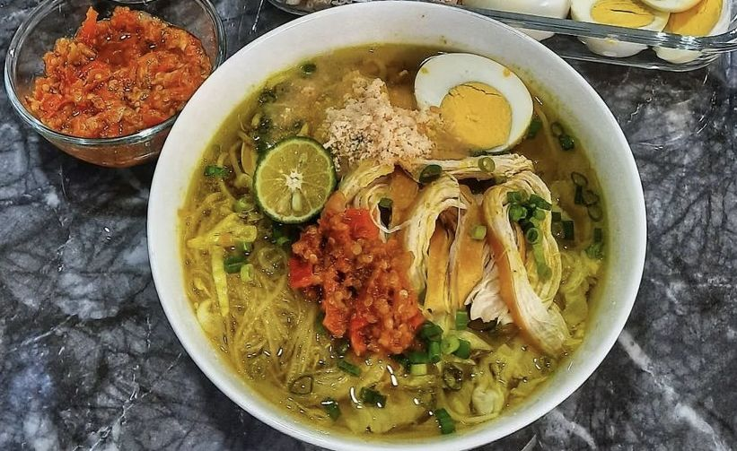

Rawon adalah masakan Indonesia berupa sup daging berkuah hitam dengan campuran bumbu khas yaitu [...]
Soto Lamongan

Soto lamongan adalah soto khas Lamongan, Jawa Timur, yang saat ini telah menyebar ke berbagai daerah di Indonesia. Soto Lamongan adalah salah satu soto paling gurih karena mempunyai ciri khas koya udang yang tidak di miliki oleh soto lainnya. Kenikmatan inilah yang menjadikan soto lamongan terkenal di Indonesia.Koya adalah sejenis bubuk kaldu yang rasanya gurih dan terbuat dari kerupuk udang dan bawang putih yang dihancurkan hingga lembut. Koya nantinya akan ditaburkan di atas isian soto sebelum disajikan.Soto lamongan biasanya berisi potongan ayam yang disuir atau dipotong kecil-kecil, bihun, telur, dan irisan kol. Isian tersebut kemudian ditaburi dengan koya dari kerupuk udang yang sudah dihaluskan bersama bawang putih goreng, kemudian disiram dengan kuah kuning berkaldu yang sangat lezat.Biasanya orang-orang akan ketagihan dengan rasa koya yang ada di dalam kuah soto lamongan. Tak lupa dengan jeruk nipis dan sambal yang membuat soto ini semakin nikmat dan kaya akan rasa.
Nasi Krawu
Nasi krawu merupakan makanan khas dari daerah Gresik, Jawa Timur. Cirinya adalah [...]